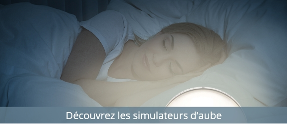

1/ UNE SEMAINE AVANT LE JOUR J : ON DÉCALE PEU À PEU L’HEURE DU COUCHER !
Une semaine avant le passage à l’heure d’hiver, on commence tout doucement à décaler le coucher. 10 minutes tous les soirs pour être synchro le jour J ! Cette méthode est parfaite pour aider notre corps à s’adapter progressivement au changement d’heure. Elle est particulièrement recommandée pour les enfants. Mais elle est évidemment très efficace pour les adultes aussi.
2/ LA VEILLE DU JOUR J : ON REMET NOS PENDULES À L’HEURE !
Pour se préparer en douceur à ce changement d’heure et éviter tout stress inutile, on règle nos horloges et autres montres la veille, avant de nous coucher. Ainsi, on ne passera pas par la case "Il est 11H de la nouvelle heure ou de l’ancienne ??"… ;)
3/ LE JOUR J : ON DORT UN PEU PLUS MAIS PAS TROP !
Ce fameux dimanche de changement d’heure, on va évidemment être tentés de prolonger la nuit et profiter de ce gain pour dormir une heure de plus… Mauvaise idée ! Cela risquerait de nous décaler complètement et de, du coup, faire traîner plus longtemps les désagréments du passage à l’heure d’hiver. Alors oui, on dort un peu plus, mais pas trop !
4/ LA SEMAINE QUI SUIT : ON CHERCHE LA LUMIÈRE !
La lumière est notre meilleure alliée pour synchroniser notre horloge biologique. Elle prépare toute la journée la qualité de notre sommeil. Mais avec ce passage à l’heure d’hiver, les journées raccourcissent considérablement… Alors on compense comme on peut, en cherchant le plus possible la lumière du jour ! Et si les occasions de profiter de la lumière naturelle ne se présentent pas, on mise tout sur la luminothérapie ! Une vingtaine de minutes tous les matins peut se montrer très bénéfique sur les décalages horaires dus aux changements d’heure ou aux voyages, mais aussi pour les personnes qui travaillent de nuit, ou encore les personnes victimes de dépression saisonnière. Une autre bonne idée : le simulateur d’aube, qui permet de se réveiller en douceur grâce à une lumière qui reproduit la lumière naturelle.

5/ TOUTE L’ANNÉE : ON PREND DE BONNES RÉSOLUTIONS CÔTÉ SOMMEIL !
Le bon sommeil, c’est sacré, et il nous faut l’entretenir. Alors voilà un petit rappel des bonnes pratiques pour un sommeil serein et réparateur :
- On chasse les mauvaises habitudes :
Pas de café, de thé, de coca après 16H, pas trop de sport le soir, pas de repas trop lourds, et surtout, pas d’exposition à la lumière bleue des écrans de téléphone, tablettes, ordi et même télé au moins 1 heure avant l’heure du coucher.
- On se prépare une chambre propice au sommeil :
On commence par débarrasser la chambre de la télé et de l’ordi, ennemis numéro 1 de notre sérénité. Et côté ambiance, on mise sur une température se situant entre 17 et 19 degrés, une bonne obscurité, et du silence !
- On opte pour une aide si on a du mal à s’endormir :
Si les bras de Morphée ne nous accueillent pas rapidement, on adopte un activateur de sommeil , qui crée un environnement propice à la relaxation et nous fera dormir comme un bébé. Il existe aussi des masques de sommeil, parfaits pour mieux respirer et donc se détendre.